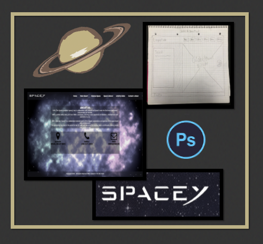
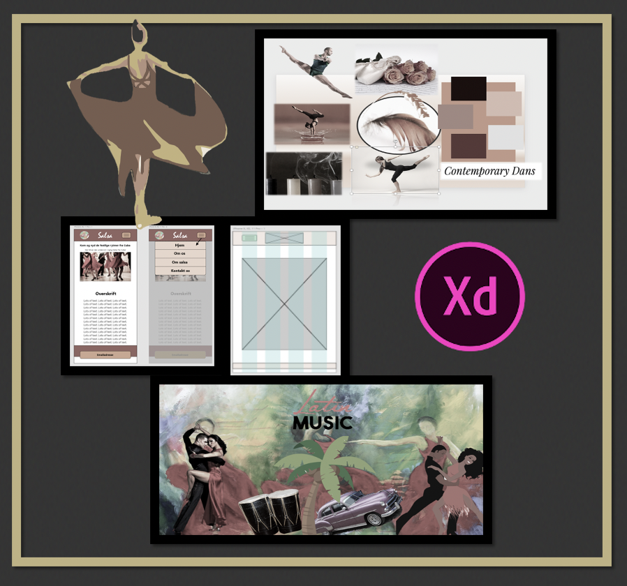
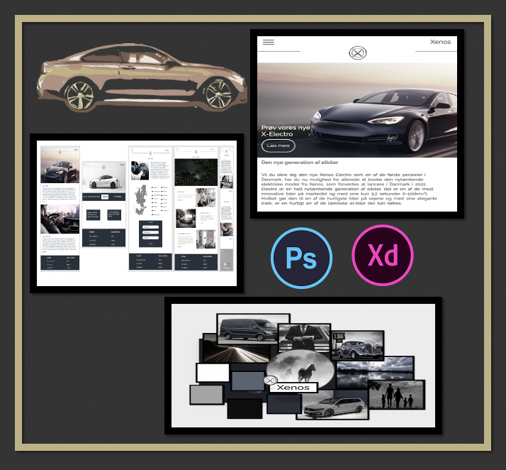
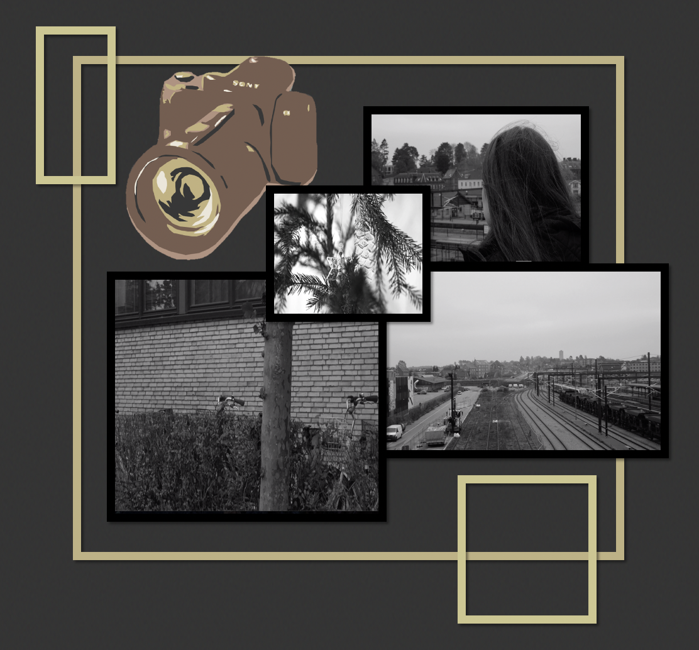

1. Semester projekter - portfolio
Tema 1- Rumrejsen
Produkt: Et koncept og website (desktop)
Rumrejsen var vores første tema som handler om konceptudvikling. Projektet var gruppearbejde af 5 personer. Et 2 uger forløb med undervisning, projektskrivning, og fremlæggelse
Læringsmål: tog udgangspunkt i ideudvikling, og sketching, HTML & CSS , og billedredigering i Photoshop.
Målgruppen: var for privatpersoner, der har råd til rumrejser. Vi skulle opfinde et koncept og kode vores første website.
I gruppen skulle vi kode en side hver. Jeg kodet kontakt/om os - som jeg lavet ud fra sketching, og et billede i Photoshop.
Tema 2 - Dans Dans Dans -
Produkt: Website (Mobile First) til en danseskole, med en specifik brugersegment.
Dette projekt var del op i to dele. Første del, handlede om designprocessen, samt udvikling af digitale produkter til brugersegmenter. Projektet var gruppearbejde af 5 personer. Et 2 uger forløb med undervisning, projektskrivning, og fremlæggelse
Læringsmål: tog udgangspunkt i Design Thinking og Projektstyring. Flexbox, Grid og Media Queries i HTML & CSS. UI, Gestaltlove & designprincipper. Lave Mock-up i /b>XD. Målgruppe og persona.
Målgruppe: skulle vi selv definerer, på baggrund af vores dans, som var salsa.
Tema 2 del 2 Produkt: Videreudvikle af website Anden del handler om, videreudvikle af en anden gruppe website, og forstå målgruppen, og foretage usability tests. Projektet var gruppearbejde af 5 personer med de samme som fra del 1. Et 2 uger forløb med undervisning og projektskrivning, og fremlæggelse
Tema 3 - Bag Rattet
Produkt: Website (Mobile first). Et koncept, og udvikling af salgsplatform af biler.
Dette projekt var del op i to dele. Første del handlede om digitale løsninger, med fokus på brugergrænseflader. Som tog udgangspunkt i ideudvikling, persona og scenarier. Projektet var gruppearbejde af 5 personer. Et 2 uger forløb med undervisning, projektskrivning, og fremlæggelse
Læringsmål: lære at kode i HTML & CSS udfra Mock-Up i XD. Anvendt Git
Målgruppen: var os selv, (studerende).
Processen i projektet fungeret godt, da vi arbejde hjemmefra under hele processen. Mine kreative evner, fik jeg mulighed for at arbejde med i forhold til Moodboard og Mock-up i XD
PTema 3 del 2:P
Produkt: Videreudvikle vores egen website til desktop.P
Anden del handlede om videre på forretningskonceptet og udvikle indholdet, så konceptet kunne markedsføre på de sociale medier.
Tema 4 - Video
Produkt: en kort digital videoportræt. Varighed 1-2 min.
Dette projekt handlede om at få skabt en portrætvideo af sin gruppemedlem. Videoen skulle filmes og redigeres. Projektet var pararbejde. Et 2 uger forløb med undervisning, projektskrivning, og fremlæggelse
Læringsmål: Grundelementer indenfor video, samt redigering i Primere Pro